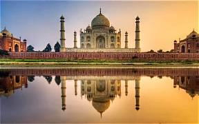

Nombre: Taj Mahal
País: India
Año de construcción: Aproximadamente entre 1631 y 1653.
El Taj Mahal fue construido por el emperador mogol Shah Jahan en memoria de su esposa Mumtaz Mahal, quien falleció en 1631. Este impresionante monumento fue creado como símbolo de amor eterno y se convirtió en una de las obras arquitectónicas más reconocidas del mundo. Su construcción reunió a miles de artesanos y especialistas durante más de 20 años.
El color del Taj Mahal parece cambiar según la luz del día: puede verse rosado al amanecer, blanco brillante durante el día y con tonos dorados durante la noche con la luz de la luna.
Anterior Maravilla ←